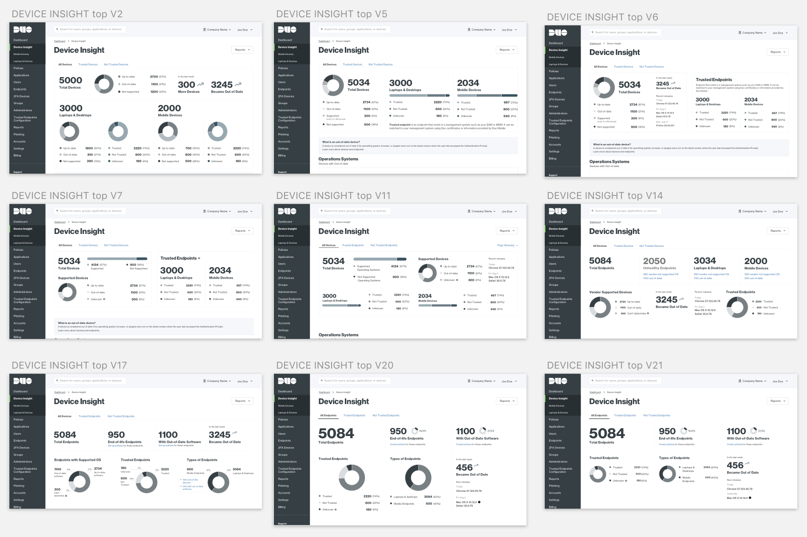

Device insight was the first data visualization feature that was introduced at Duo Security in early 2016. The goal of this feature was to help our customers (IT administrators) to understand the health state of their devices at a glance. We let this feature live and breath for 1.5 years and then we returned to make it better.
Why did we do it in the first place?
75% of breaches happen because compromised user devices.
Every year we are told that most of the breaches happen because of compromised devices or compromised credentials. Compromised devices are devices that are running out of date software such as operating system (os), browser, or plugin. These devices are a threat to security of a company, are open to security vulnerabilities, and leave open doors to data that needs to be protected.
Research (or get your shovel out)
Customer visits
We visited 5 customer in the Bay area (including Facebook) to talk about how they set requirements around devices, what is their ideal state, and how can we at Duo help them to understand information around devices and take actions.
Tech support tickets
I searched through our database of tech support tickets with relevant key words. I was able to locate a couple dozen tickets.
Data and analytics
Using internal logging system (Kibana) and Google analytics, I was able to dig into how often customers interact with the current Device page and if they perform any actions on the page.
Design process
Step 1: Mind Map
First, I created a mind map. This was an excellent exercise to broaden the boundaries of thinking, expose hidden connections, and think “outside of the box”.
Not sure what mind map is? Read about it.
Mind map sketch
Step 2: Sketching ideas
Pencil and paper are the cheapest and most rapid ways to iterate upon your ideas. You can easily share the sketches with your engineers and product managers (PMs), and even show them to customers to get early validations.
A few of the hand sketches
Step 3: Rough mockups and UX interviews
Rough mockups is something in between wireframes and hi-fidelity sketches. The goal here is not to decide on visuals, but rather find a solution. I use rough mockups to start conversations with our customers, something that at Duo we call “UX interviews”. These interviews help us define:
- Are we on the right track?
- Is there data that is missing?
- Can our customers take actions on the displayed data?
- Is the terminology something that a customer understands and speaks?
Feedback from these UX interviews helps us to iterate very quick and converge to find a solution.

A few rough mockups
UX interviews are also great opportunities to bring everyone on the same page. I made it manadatory for my engineers to attend at least a few of these calls.
Step 4: Hi-fidelity prototypes and usability testing
Now it’s time to create hi-resolution mockups that will be used to create clickable prototype via Marvel app. We use these prototypes to do usability testing with customers as well as internal stakeholders.
One of the hi-fidelity mockupsInteractive prototype built in Marvel App
The conclusion
Device insight was a massive project that lasted 5 months. However, success of it relied on continues collaboration amongst many people and teams:
– engineering team
– a product manager
– designers from the data team
– pattern library team
This project just launched and we are currently tracking customer's feedback as well as metrics on usage.